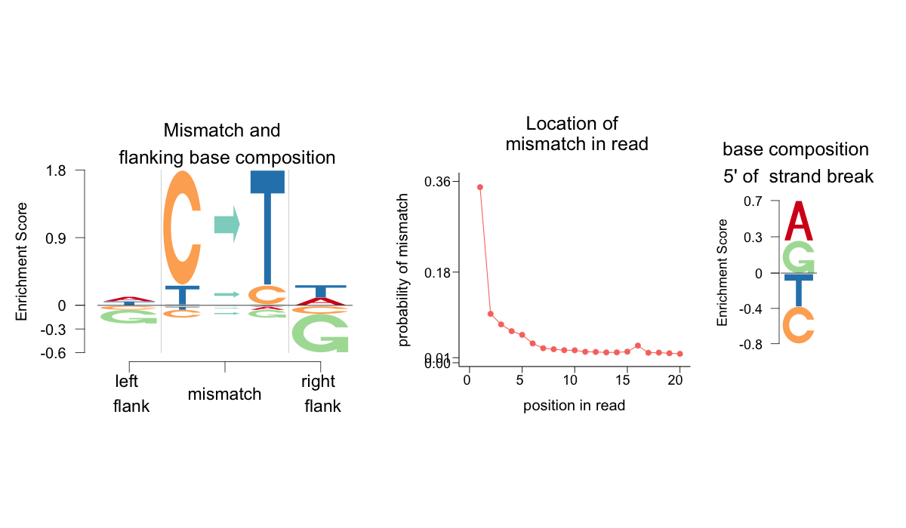
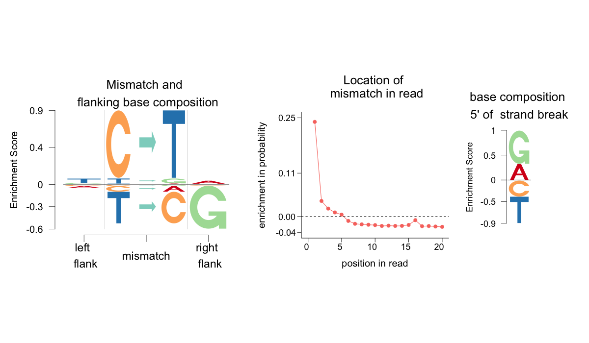
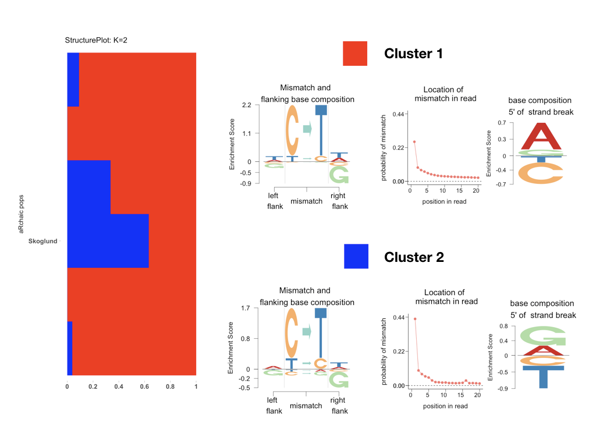
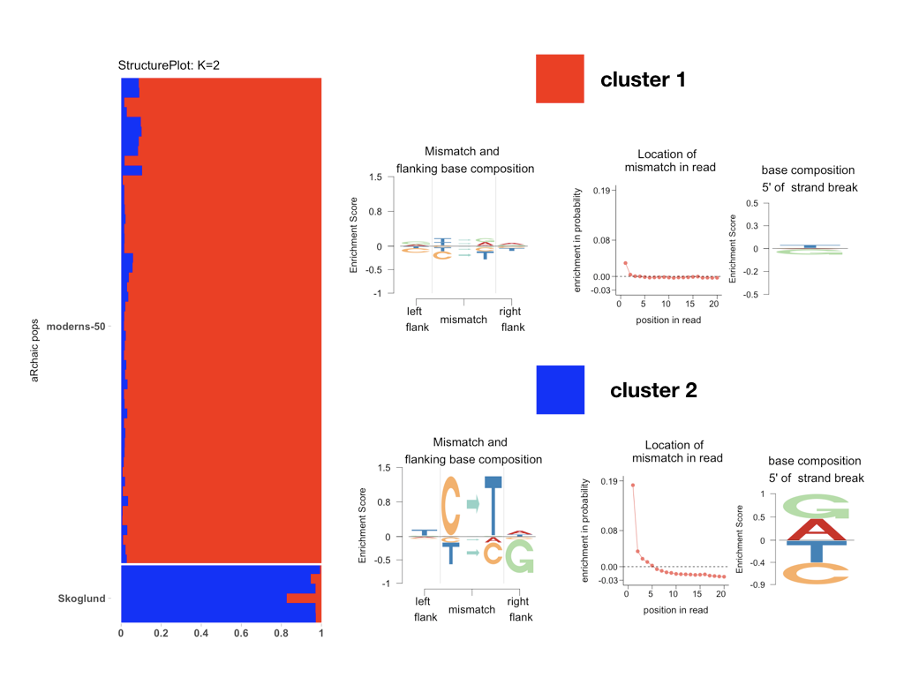
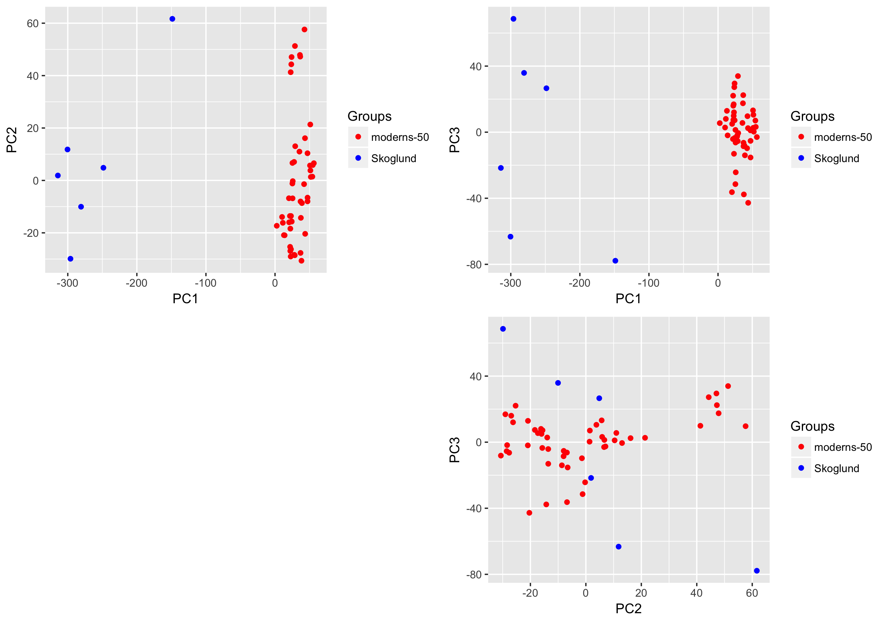
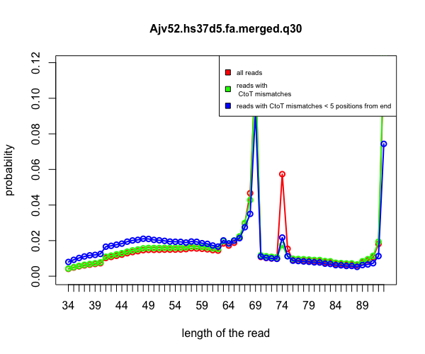

aRchaic is a R/python software interface developed by Kushal K Dey and Hussein Al-Asadi at the University of Chicago. It is primarily a tool for clustering and visualization of DNA damage patterns in ancient DNA samples, possibly generated from multiple studies.
Why aRchaic?
One of the challenges in working with ancient DNA samples pertains from the fact that such samples often have low endogenous DNA and may be contaminated by modern DNA at extraction or processing stages. DNA damage has been shown to be an important marker for authenticating aDNA samples. One popular tool that addresses this problem is mapDamage . However, mapDamage treats each aDNA sample separately and this acts as a roadblock when analysing many aDNA samples jointly. With some of the current aDNA research articles sequencing hundreds of aDNA samples, this is a matter of considerable interest. aRchaic addresses this problem through a model based clustering and visualization of DNA damage patterns from aDNA samples, possibly taken from multiple studies, as well as modern DNA samples. Also, different aDNA studies involve different sets of technical artifacts - namely library preparation protocols (UDG treatment versus non UDG treatment), different PCR enzymes etc. aRchaic has been shown to identify these technical differences as well.
To run aRchaic on your own examples or reproduce the results from this vignette, first install Git . Then, clone the following Github repository at a desired location in your local machine.
git clone https://github.com/kkdey/aRchaic-pages
Go inside the created folder
cd aRchaic-pages
Then install Python via the command line and export the path to the directory bin to the $PATH variable.
Next, install the pysam package following the instructions in the link. It requires that Cython is installed beforehand. The user is also required to install the python package pyfaidx . The python environment can be set up by the following command in the command line.
python setup.py install
Once python environment has been set up, the user is required to install the latest version of R . We recommend the user to use Rstudio , a very well manintained GUI for R. Start a session od R/RStudio and then install the dependency packages for aRchaic.
install.packages("devtools")
devtools::install_github("kkdey/CountClust")
devtools::install_github("kkdey/Logolas")
devtools::install_github("TaddyLab/maptpx")
Once these packages are installed, the user can install aRchaic using devtools
devtools::install_github("kkdey/aRchaic")
and load the package in R
library(aRchaic)
To check or understand the underlying codes or to contribute to the aRchaic R pakcage, you can clone the repository with all the codes and documentation here.
git clone https://github.com/kkdey/aRchaic
The first step in the aRchaic workflow involves generating a Mismatch Feature Format ( MFF ) file, for which the user needs as input
a valid SAM/BAM file ( example.bam ) with a correct header
a FASTA file ( example.fa ) corresponding to the 2009 assembly of the human genome (hg19, GRCh37 Genome Reference Consortium Human Reference 37). This file can be obtained from 1000 Genomes website
The user is required to first index the BAM file using samtools
.
samtools index example.bam
Then the MFF file can be generated in a CSV format ( example.csv ) by running the following command from the command line.
python generate_summary_bams.py -b example.bam -f example.fa -o example.csv
Some versions of the FASTA file contain the chr prefix to indicate the chromosome in the contig names, while others do not. In case the prefix is absent, use the --add-chr option as shown below.
python generate_summary_bams.py -b example.bam -f example.fa -o --add-chr
The full documentation of the generate_summary_bams.py can be obtained by running
python --help generate_summary_bams.py
usage: python [option] ... [-c cmd | -m mod | file | -] [arg] ...
Options and arguments (and corresponding environment variables):
-b : issue warnings about str(bytes_instance), str(bytearray_instance)
and comparing bytes/bytearray with str. (-bb: issue errors)
-B : don't write .py[co] files on import; also PYTHONDONTWRITEBYTECODE=x
-c cmd : program passed in as string (terminates option list)
-d : debug output from parser; also PYTHONDEBUG=x
-E : ignore PYTHON* environment variables (such as PYTHONPATH)
-h : print this help message and exit (also --help)
-i : inspect interactively after running script; forces a prompt even
if stdin does not appear to be a terminal; also PYTHONINSPECT=x
-I : isolate Python from the user's environment (implies -E and -s)
-m mod : run library module as a script (terminates option list)
-O : optimize generated bytecode slightly; also PYTHONOPTIMIZE=x
-OO : remove doc-strings in addition to the -O optimizations
-q : don't print version and copyright messages on interactive startup
-s : don't add user site directory to sys.path; also PYTHONNOUSERSITE
-S : don't imply 'import site' on initialization
-u : unbuffered binary stdout and stderr, stdin always buffered;
also PYTHONUNBUFFERED=x
see man page for details on internal buffering relating to '-u'
-v : verbose (trace import statements); also PYTHONVERBOSE=x
can be supplied multiple times to increase verbosity
-V : print the Python version number and exit (also --version)
when given twice, print more information about the build
-W arg : warning control; arg is action:message:category:module:lineno
also PYTHONWARNINGS=arg
-x : skip first line of source, allowing use of non-Unix forms of #!cmd
-X opt : set implementation-specific option
file : program read from script file
- : program read from stdin (default; interactive mode if a tty)
arg ...: arguments passed to program in sys.argv[1:]
Other environment variables:
PYTHONSTARTUP: file executed on interactive startup (no default)
PYTHONPATH : ':'-separated list of directories prefixed to the
default module search path. The result is sys.path.
PYTHONHOME : alternate directory (or :).
The default module search path uses /pythonX.X.
PYTHONCASEOK : ignore case in 'import' statements (Windows).
PYTHONIOENCODING: Encoding[:errors] used for stdin/stdout/stderr.
PYTHONFAULTHANDLER: dump the Python traceback on fatal errors.
PYTHONHASHSEED: if this variable is set to 'random', a random value is used
to seed the hashes of str, bytes and datetime objects. It can also be
set to an integer in the range [0,4294967295] to get hash values with a
predictable seed.
PYTHONMALLOC: set the Python memory allocators and/or install debug hooks
on Python memory allocators. Use PYTHONMALLOC=debug to install debug
hooks.
The basic structure of the MFF file is as follows
....................
....................
CC->TA,82,10,T,C,-,1
CC->TT,87,5,T,C,-,1
CT->AA,88,4,T,C,-,1
AA->CC,90,2,T,C,-,1
CC->TC,28,53,C,C,-,2
CC->TA,40,47,A,C,-,3
CC->TT,69,18,A,C,-,3
AC->AC,79,8,A,C,-,3
AC->AC,68,25,T,C,-,4
CT->AA,78,15,T,C,-,4
....................
....................
It is a comma separated file consisting of 7 columns. Each row corresponds to a type of mismatch and the first 6 columns define the type of mismatch. The 7th column specifies the number of times that type of mismatch has been observed in the BAM file, with respect to the given reference genome. More specific details on the columns are
1st column : (flanking base 5' to mismatch)(mismatch)(flanking base 3' to mismatch). Example : (C)(C->T)(A) for the first reported line in the example MFF file shown above.
2nd, 3rd columns : distance of the mismatch from the two ends of the strand.
4th, 5th columns : base immediately next to the read ends in the reference genome. One of the ends corresponds to the strand break for an aDNA sample, which can be determined from strand orientation.
6th column : The orientation of the strand (+ : 5' to 3' , - : 3' to 5' strand).
7th column : The number of mismatches observed with the features listed in the first 6 columns.
We now demonstrate the first function of the aRchaic package.
Note that there are two data folders - Skoglund and moderns-50 in the aRchaic-pages/data/ directory. Skoglund contains MFF files for a subset of aDNA samples. We perform a logo visualization of one of the MFF files from this directory.
aRchaic_view(file = "data/Skoglund/Gok4.hs37d5.fa.merged.q30.csv",
output_dir = "output/",
filename = "logo_Gok4_Skoglund")
This function will output a .png file titled logo_Gok4_Skoglund.png in the output_dir specified, that looks like the following

Lets investigate the different aspects of this logo representation. There are three components to the plot - an Enrichment Depletion Logo ( EDLogo ) plot showing the enrichment or depletion of the mismatch types and the flanking bases immediate 5' and 3' of the mismatch, an EDLogo plot of the strand break nucleotides composition and a trend plot of the relative frequency of the position of mismatches from the ends of the reads. Note that the mismatches reported are only C-to-* or T-to-* mismatches, which accounts for the strand bias. Under the default, the enrichments and depletions are with respect to a background that assigns equal probability to all features. However, one can use a different background. One particular background of interest is that of modern DNA damage.
base_probs_list <- get(load("output/base_probs_temp_2.rda"))
aRchaic_view(file = "data/Skoglund/Gok4.hs37d5.fa.merged.q30.csv",
output_dir = "output/",
logo.control = list(base_probs_list = base_probs_list),
filename = "logo_Gok4_Skoglund")

For joint analysis, the user needs to aggregate the MFF files either from one study or from across multiple studies for cross study comparison. aRchaic provides a function
out <- aRchaic_pool(folders = "data/Skoglund/")
this function outputs .RData files in the folder (s) specified, named after the folder. for example - in this example, it will create a file named Skoglund.rda in the directory Skoglund as specified in the folders argument above. The output is also stored in the variable out in this case.
This object is a data matrix with the number of rows equal to the number of MFF files in the folder and the number of columns equal to the number of distinct mismatch signatures drawn from from the first 6 columns of the MFF file - an example column name would be may be AC->AA_-_A_1 - indicating a C->A mismatch flanked by A's on both sides and occurring in the first position from 5' end of a read obtained from a - strand with an A base at the position immediately preceding the strand break. The data in the matrix corresponds to the 7th column of the MFF file, recording the count of how many times a signature such as the one above would occur in each sample MFF file.
The first 5 rows and 5 columns of out are the following
AC->AA_-_A_1 AC->AA_-_A_10 AC->AA_-_A_11
Ajv52.hs37d5.fa.merged.q30 789 45 50
Ajv59.hs37d5.fa.merged.q30 25 0 1
Gok4.hs37d5.fa.merged.q30 318 47 27
Gok5.hs37d5.fa.merged.q30 61 1 1
Gok7.hs37d5.fa.merged.q30 20 3 0
AC->AA_-_A_12 AC->AA_-_A_13
Ajv52.hs37d5.fa.merged.q30 44 43
Ajv59.hs37d5.fa.merged.q30 1 1
Gok4.hs37d5.fa.merged.q30 28 38
Gok5.hs37d5.fa.merged.q30 0 5
Gok7.hs37d5.fa.merged.q30 0 1
Argument folders in the input to
Note that all the functions in aRchaic - for example, the
Now we discuss the primary function of the aRchaic package, namely
Each cluster is represented by a distribution on the different mismatch features, which can be
displayed by a logo plot similar to the one in
As an example, we run
labs <- c(rep("Skoglund",6))
clus <- aRchaic_cluster_2(folders = c("data/Skoglund/"),
K = 2,
tol = 1,
labs = labs,
run_from = "plot",
output_dir = "output/skoglund_2/")
This function fits the GoM model and creates output files in the output_dir specified. The output includes three components
A combined plot of the STRUCTURE plot output and the logo plots output is presented below
.
We now present a second example, where we pool in data from two different studies - one modern
study (subset of 1000 Genomes) saved in the folder moderns-50 in the data folder and the aDNA example data folder
from above. Consciously, we have just put the aggregated MFF .RData file in moderns-50 folder and not the individual MFF
files to highlight the fact that under the default option (corresponding to
labs <- c(rep("Skoglund",6), rep("moderns-50",50))
clus <- aRchaic_cluster(folders = c("data/Skoglund/", "data/moderns-50/"),
K = 2,
tol = 1,
labs = labs,
run_from = "plot",
output_dir = "output/skoglund_moderns_2/")

The input
When
When
Just like in
labs <- c(rep("Skoglund",6), rep("moderns-50",50))
base_probs_list <- get(load("output/base_probs_temp_2.rda"))
clus <- aRchaic_cluster_2(folders = c("data/Skoglund/", "data/moderns-50/"),
K = 2,
tol = 1,
labs = labs,
run_from = "plot",
logo.control = list(base_probs_list = base_probs_list,
mut_ranges = c(1,1.5),
break_ranges = c(0.5,0.5)),
output_dir = "output/skoglund_moderns_2_background/")

Apart from the
labs <- c(rep("Skoglund",6), rep("moderns-50",50))
library(gridExtra)
clus <- aRchaic_pca(folders = c("data/Skoglund/", "data/moderns-50/"),
labs = labs,
run_from = "plot",
pcs_to_plot = c("PC1", "PC2", "PC3"),
output_dir = "output/skoglund_moderns_2_background/")
The function plots the scatter plot for the first 3 PCs in the output_dir argument.

aRchaic also provides tools to plot the frequency distribution of the position of mismatches on the read for all reads as well as reads containing probable DNA damage in the form of C-to-T mismatches. An example is provided below.
read_length_distribution(file = "data/Skoglund/Ajv52.hs37d5.fa.merged.q30.csv")

aRchaic is distributed under GPL (>= 2) license.
We thank Matthew Stephens and John Novembre for their mentoring. We also thank Anna Di Rienzo, Anna Gosling, David Witonsky, John Lindo, Choonwong Jeong, Benjamin Peter, Arjun Biddanda, Joseph Marcus, Peter Carbonetto, John Blischak, Dongyue Xie and all members of Stephens Lab, Novembre Lab and Di Rienzo Lab.
For any queries related to aRchaic , please contact Kushal K. Dey (kkdey@uchicago.edu) or Hussein Al-Asadi (halasadi@uchicago.edu).